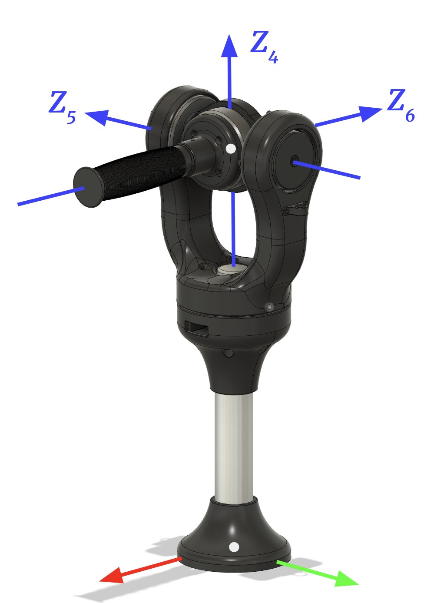
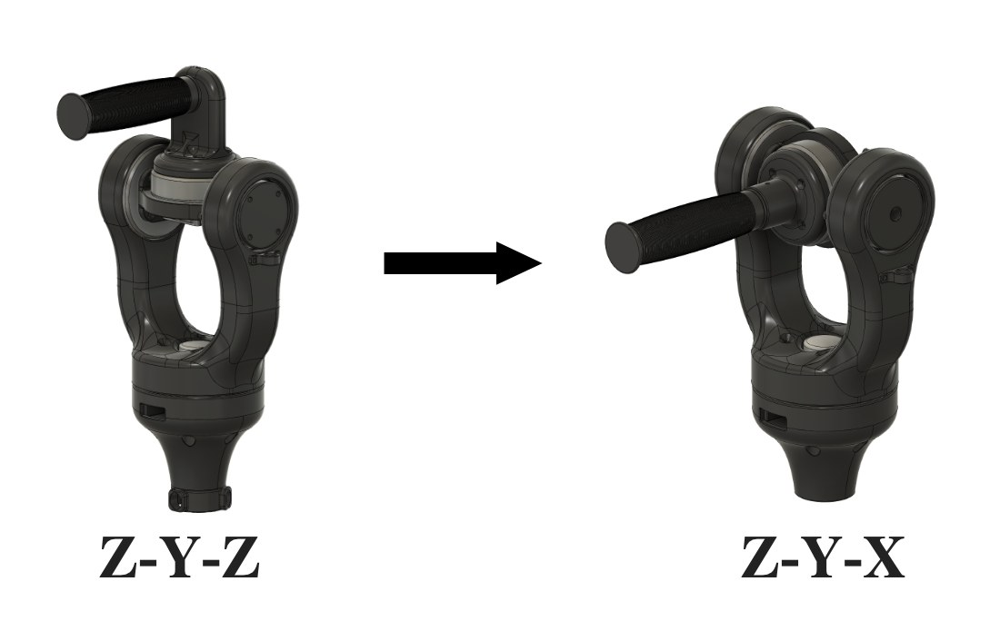
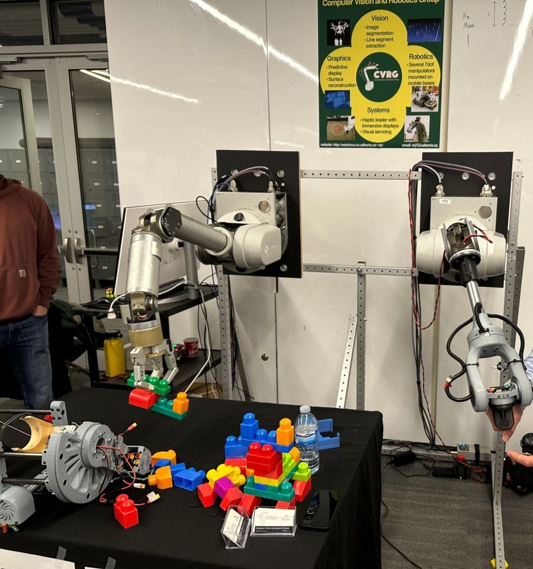
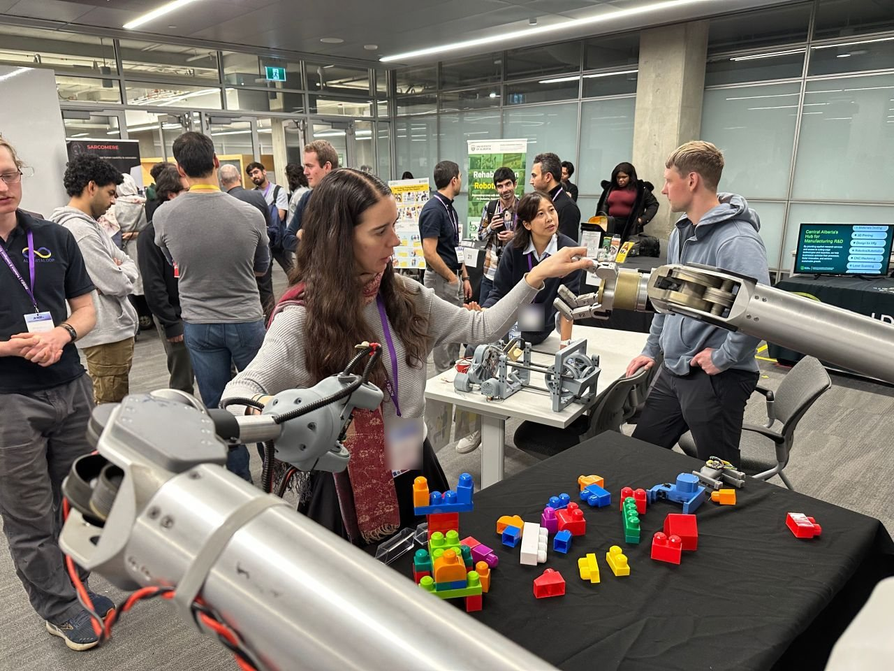
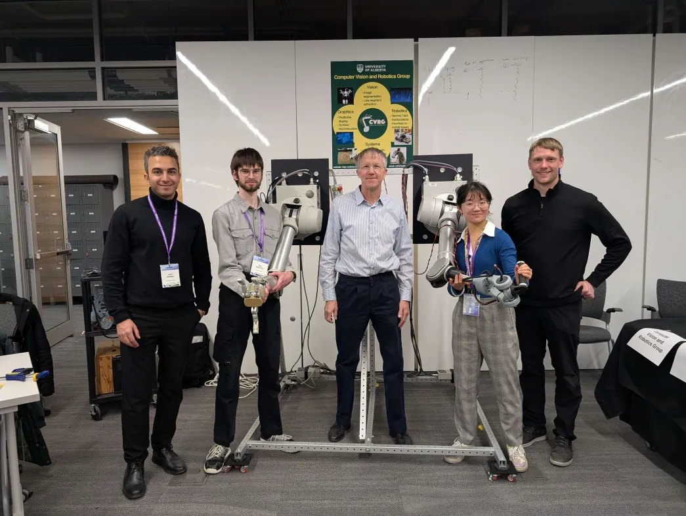

This is a three-joint wrist for the leader WAM in our lab’s teleoperation setup. It’s an end-effector design. The operator holds a handle at the end of the arm, and nothing is strapped to their forearm. That makes it a different device from the direct-drive gimbal wrist, which we used to test strapping the WAM to the operator’s forearm as an approximate exoskeleton.
I demoed this wrist at RISEx 2025, and it’s the wrist on the leader arm in our sensorless four-channel teleoperation paper.
We looked at an end-effector design to get away from the discomfort of the exoskeleton-style wrists. Those are only approximate exoskeletons. They have many kinematic misalignments with the operator’s arm and no redundant degrees of freedom, so they’re very uncomfortable to use.
The second reason was the way physical “twisty-turny” interfaces work. They often have fewer degrees of freedom than the limb that drives them. A motorcycle throttle or a bike pedal takes the complicated motion of an arm or a leg and maps it onto one degree of freedom. A handle at the end of the arm lets the operator work several degrees of freedom at once, fluidly, through one physical interface.
How the WAM is mounted matters too. Mounted flat with the elbow up, the WAM may call for more extreme wrist movements than when it’s mounted vertically with the elbow down. For a flat mount with the elbow up, an end-effector design seems like a must.
All three joints are driven directly, because that made it easy to prototype. J5 uses a CubeMars GL80, and J6 and J7 each use a CubeMars GL60. The structure is 3D printed, and the handle is a bike grip. There are two versions with different joint layouts, Z-Y-Z and Z-Y-X.
| Joints | 3, directly driven |
|---|---|
| J5 motor | CubeMars GL80: 1 N·m rated, 2.9 N·m peak |
| J6 and J7 motors | CubeMars GL60: 0.6 N·m rated, 1.75 N·m peak |
| Joint layouts | Z-Y-Z, then Z-Y-X |
| Structure | 3D printed, with a bike grip for the handle |
For comparison, the torques I listed for the WAM’s own wrist are 6.75 N·m at J5 and J6 and 1.36 N·m at J7. At peak, the GL80 gives 43% of the WAM’s J5 figure and the GL60 gives 26% of its J6 figure. J7 is the exception, where the GL60’s 1.75 N·m peak is above the WAM’s 1.36. In use, the motors saturate when rendering collisions.

The first version had the same joint layout as the WAM’s wrist. That put a singularity right in the centre of the workspace, and it kept causing problems. We got gimbal lock there, and with a degree of freedom lost, J5 and J7 would move interchangeably. Your ability to pitch and roll the handle then depends on where J5 is.
In the Z-Y-Z layout the handle’s orientation is
\[ R = R_z(\theta_5)\,R_y(\theta_6)\,R_z(\theta_7). \]At \(\theta_6 = 0\) the middle rotation drops out and
\[ R = R_z(\theta_5 + \theta_7), \]so only the sum of the J5 and J7 angles matters. The handle’s angular velocity is
\[ \boldsymbol\omega = \dot\theta_5\,\hat{\mathbf z} + \dot\theta_6\,R_z(\theta_5)\,\hat{\mathbf y} + \dot\theta_7\,R_z(\theta_5)\,R_y(\theta_6)\,\hat{\mathbf z}, \]and at \(\theta_6 = 0\) it becomes
\[ \boldsymbol\omega = (\dot\theta_5 + \dot\theta_7)\,\hat{\mathbf z} + \dot\theta_6\,R_z(\theta_5)\,\hat{\mathbf y}. \]That never has a component along \(R_z(\theta_5)\,\hat{\mathbf x}\). To tilt the handle that way, J5 first has to swing around by as much as 90°.
In the Z-Y-X layout the last rotation is about the handle’s own axis:
\[ R = R_z(\theta_5)\,R_y(\theta_6)\,R_x(\theta_7). \]The J7 axis is
\[ R_z(\theta_5)\,R_y(\theta_6)\,\hat{\mathbf x} = R_z(\theta_5) \begin{bmatrix} \cos\theta_6 \\ 0 \\ -\sin\theta_6 \end{bmatrix}. \]At \(\theta_6 = 0\) it’s perpendicular to both the J5 and J6 axes, so the handle can turn about any axis. It only lines up with J5 at \(\theta_6 = \pm 90^\circ\). The singularity is still there, a quarter turn of J6 away from the home pose.
To get around the singularity, and to open up more design options, we moved the wrist off joint-to-joint bidirectional teleoperation and onto orientation-to-orientation control, based on libbarrett’s orientation controller. The WAM’s other four joints kept their joint-to-joint mapping. This has worked well. It’s still intuitive to operate, and it lets us move smoothly through the singularity.
Of the prototypes we had at the time, this one did best on task completion and on the operator’s mental load.
Its large range of motion lets the operator use the full range of the WAM’s wrist, which is a lot larger than a human wrist’s. We found that extra range critical for most tasks. The WAM’s hand is much less flexible than a human hand, so it has to be nearly perpendicular to a surface to grasp something on it. A two-finger gripper could partly get around that.
Here is the total range of each WAM wrist joint, next to the human wrist motion I paired it with:
| J5 (yaw) | WAM 344°. Human pronation–supination 180°. |
|---|---|
| J6 (pitch) | WAM 180°. Human flexion–extension 180°. |
| J7 (roll) | WAM 344°. Human radial–ulnar deviation 50°. |
With an experienced operator, the haptics seem to slow tasks down, because moving through free space feels sluggish. Free space feeling free was one of Kenneth Salisbury’s three main design considerations for the PHANToM. The feedback does give a sense of safety during a task, since you can feel how hard the follower is working.
There are downsides to dropping the approximate exoskeleton. We lose control of the arm as a whole, and the operator often has to help position the WAM with their other arm during a task. That makes the system harder to use, and it limits it in single-arm situations, such as one person running two WAMs at once. One fix would be a virtual coupling between the operator’s arm and the WAM. It would live in software, so there’s a lot of freedom in how it behaves.

In November 2025 our lab, the Computer Vision and Robotics Group, had a booth at RISEx, the Robotics & Intelligent Systems Expo at the University of Alberta. I demoed this wrist there. Both WAMs were bolted to a vertical frame, and visitors drove the follower from the leader to stack blocks.


This wrist is on the leader arm in Sensorless Four-Channel Control Architecture Using Inverse Dynamics Modeling for Human-Scale Bilateral Teleoperation, by Amir Noohian, Dylan Miller, me, Alan Lynch and Martin Jagersand, submitted to IROS 2026. Amir is the first author. The paper describes the leader as a 4-DOF WAM with a 3-DOF custom haptic wrist. Its experiments only control the arm’s first four joints, with the wrist joints locked and modelled as a rigid link.